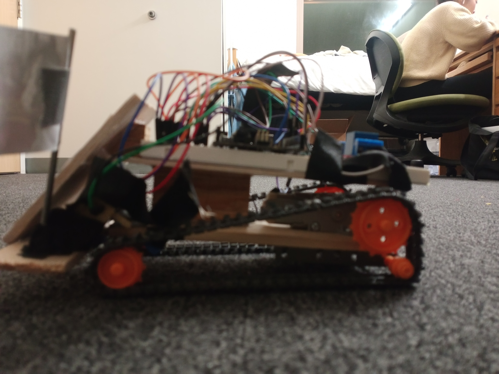

Robotics
2-DoF Bluetooth Car
Custom-built Arduino car with Bluetooth remote control and two-axis steering.
Overview
Designed and built a two-degree-of-freedom remote-controlled car with Bluetooth communication.
Approach
Integrated Arduino, motor drivers, and Bluetooth module; fabricated custom chassis.
Results
Delivered a functional remote-control platform for prototyping control algorithms.